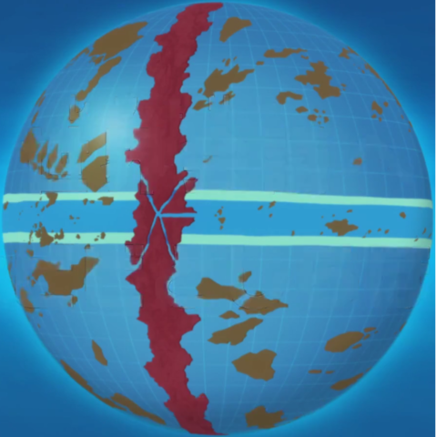

World
Dominating the world's surface is the Blue Sea, a body of saltwater broadly divided into quadrants: the East Blue, the West Blue, the North Blue, and the South Blue. These divisions are formed by two natural barriers that bisect the world at roughly perpendicular angles:
Grand Line
One Piece Globe
Red Line
The Grand Line, a relatively narrow strip of ocean infamous for its unnatural, rapidly-shifting climates and monstrous wildlife—as well as being enclosed by the completely wind- and current-free Calm Belt regions.
The Red Line, a huge (and mostly barren) landmass that functions as the world's only true continent.
All parts of the Blue Sea—Grand Line and Calm Belts included—contain numerous islands supporting many different degrees of life. Travel between these islands is relatively simple in the four Blues, but significantly more complex in the Grand Line, where (in addition to the aforementioned hazards) many islands produce unique magnetic fields that render the magnets of ordinary compasses useless, necessitating special "Log Pose" compasses.